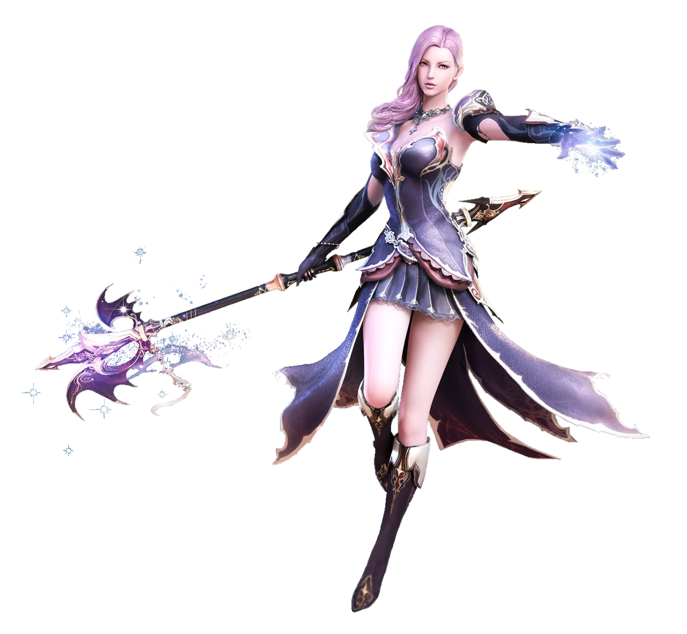
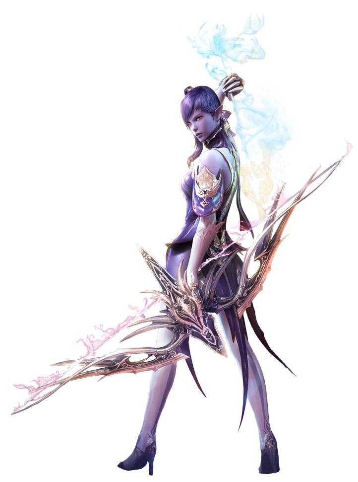

Элийцы, оставшиеся на светлой стороне Атреи, сохранили красоту и привлекательность, а их крылья не утратили белизну. Но и им пришлось взяться за оружие, чтобы защищать свой дом — солнечный Элиос.

У асмодиан, обреченных выживать во тьме, появились когти, их крылья почернели, а глаза стали источать яростный свет. Ледяная земля Асмодеи стала их родным краем, за который не жалко отдать жизнь.